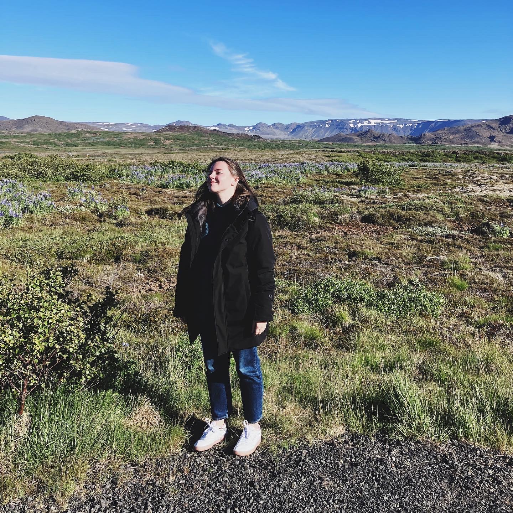

Tatiana Privezentseva
Here's a picture of me:
(well, not really... even though I feel like this most of the time). Here's me as a human:
I joined the SSD program to gain more experience and knowledge in back-end and strengthen my front-end skills. My friend Maria Revelo who was a part of the previous cohort of the SSD and with whom I attended the BrainStation coding bootcamp recommended me this program as a good way to improve as a Junior Web Developer.
I am very excited to be here and contribute to the world of programming! P.S. So far this page looks like it's Internet of year 2000 which is nostalgic for me... I will improve it with the magic of CSS once we move on to it :)